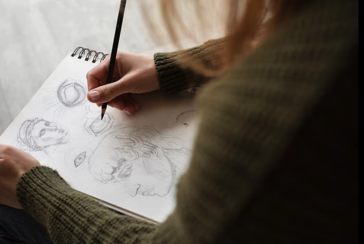

A little bit About Me
Hi! My Name is Camila Segovia. I started my journey in Graphic Design and there I realized that I loved creating visuals that told a story. I started getting curious about web design and how design could interact with users. It was really cool to see how visuals and functionality come together on a website. That curiosity quickly turned into a new focus for me. Now I’m diving into web design as a student, learning all the technical stuff like HTML, CSS, and how to make things look good and work well and I am excited to keep building and creating things people can actually use.
In my free time I like to play my guitar, play pickleball , draw, hang out with friends, and dance. My friends thankfully also like to dance so that's always fun. I recently just started learning to play guitar this summer so I still don't sound the best but hopefully I'll improve my skills with more practice! Doing all these things make me happy so I try to do them whenever I can.
 As I continue to grow in web design, I’m eager to develop and explore more. My goal is to become a full-stack designer. I'm especially interested in working on projects that challenge me to think both creatively and analytically.